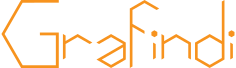

“There are three responses to a piece of design – yes, no, and WOW!
Wow is the one we aim for.”

Nieuwe Projecten
EcommercePro
EcommercePro
E-commerce Pro kwam naar Grafindi en gaf ons opdracht om hun nieuwe merkidentiteit, logo-ontwerp en website-ontwerp te creëren. Zij wilden hun nieuwe e-commerce website oplossingsdienst van de andere concurrenten op hun marktplaats van Dubai en de UAE scheiden. Ze vroegen ons om een heldere en moderne uitstraling te creëren die hen als e-commerce marktleiders zou positioneren. We hebben een visie ontwikkeld voor het merk gebaseerd op de 3 basisprincipes van het bedrijf. Wij ontwierpen een cirkelvormig logo dat het oneindigheidsembleem heette. Oneindige oplossingen, oneindige mogelijkheden, oneindige ideeën. Met de website van EcommercePro creëerden we iets heel verrassend maar toch intuïtief om te gebruiken, waardoor klanten een unieke, maar naadloze ervaring hebben.
AALTO
AALTO mortages
Nieuwe startverlenende hypotheekmaatschappij AALTO kwam naar Grafindi en vroeg ons om hun nieuwe merkidentiteit en websiteoplossing te creëren. Met een scherp idee om zich te onderscheiden van de "saaie en dodelijke" sites van anderen in hun industrie, vroeg AALTO ons om iets heel anders en uniek te maken dat hun hoofd en schouders boven hun concurrentie zou plaatsen. Samen met AALTO creëerden we een uniek en felgekleurd logo dat hen onderscheidt van hun competitie. Met de AALTO website, besloten we een brochure site gewoon niet genoeg zou zijn. Samen hebben we een diepgaande hypotheek- en kredietverleningsbron gecreëerd die zich richt op het helpen van de gebruiker om de vereiste informatie te krijgen in plaats van te verkopen aan hen.
Vuelio
Access Intelligence group
Vuelio is een merk van PR en Communicatie Software die deel uitmaakt van de Access Intelligence-groep. Ze bieden oplossingen voor het beheren van public relations, politieke diensten en stakeholders engagement. Vuelio werkt met klanten die variëren van de BBC naar Sony naar Google. Vuelio heeft Grafindi uitgedaagd om een rebrand te creëren dat zich richt op de peer-to-peer-betrokkenheid van hun software. Na verloop van tijd begonnen we een volledige merkidentiteit op te bouwen, waaronder een logo-ontwerp en kleurenschema, door middel van kantoorartikelen, animatiebanners en print reclamecampagnes die in PR Week magazine werden vermeld.
Logo
Een uniek en sterk logo, daarmee legt u de basis van een goede onderneming. U maakt duidelijk wat u wil, waarvoor het moet dienen en eventuele specificaties zodat wij van start kunnen gaan.
Huisstijl
Succes start met een ijzersterk imago. Wij creëren samen met u een visuele identiteit die u laat opvallen en uw bedrijf het juiste imago geeft!
Webdesign
Wij zorgen voor een stijlvolle bedrijfswebsite die hoog scoort in Google, geoptimaliseerd voor smartphones & tablets, die bezoekers kan overtuigen!
Advies
Onze grafische dienst buigt zich nauwlettend over uw grafisch ontwerp. Is de kwaliteit of het formaat van uw bestand onvoldoende? Als een alerte observator luiden we tijdig de alarmbel zodat u zeker kunt zijn dat uw nieuwe realisatie aan de hoogste eisen voldoet.